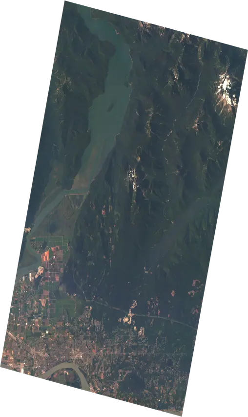
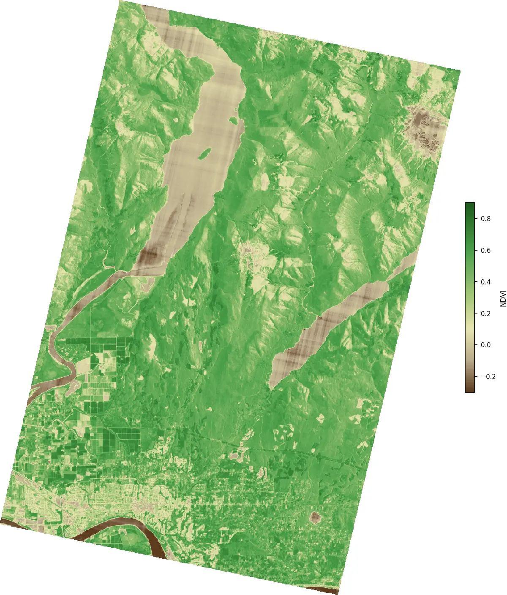

What Light Reveals
How a team of University of Alberta graduates put hyperspectral eyes in orbit — and made them free to use
A photograph tells you what a place looks like. A hyperspectral image tells you what it is made of. This article traces how Canadian ingenuity — from Alouette-1 to an Edmonton startup orbiting CubeSats on SpaceX rideshares — has kept Earth observation at the frontier, and what the mathematics of light and reflectance lets us read in data that is now freely available to anyone.
A photograph tells you what something looks like. A hyperspectral image tells you what something is.
That distinction sounds like marketing copy, but it is actually physics. When sunlight strikes a leaf, certain wavelengths are absorbed — drawn into the photosynthetic machinery of chlorophyll — and certain wavelengths are reflected back. The green we see is the portion the plant has no use for, bounced away. But the reflectance story continues past what our eyes can detect. In the near-infrared, just beyond the visible red, healthy plant tissue reflects with extraordinary intensity. The spongy mesophyll cells inside a leaf — the same architecture that makes photosynthesis efficient — act as a structural reflector at those wavelengths, bouncing back two to three times more energy than arrives in the red. Stressed, diseased, or dying vegetation loses that architecture. The near-infrared reflectance drops. Weeks before a leaf shows any visible colour change, the plant has already started broadcasting a signal that a properly equipped sensor can read.
Water does something different. It absorbs near-infrared almost completely, while reflecting moderately in the green. Dry soil ramps smoothly from low blue reflectance to higher red and near-infrared, with no sharp features. An asphalt road, a saltpan, a wildfire burn scar, a shallow reef over white sand — each has a distinct spectral fingerprint, a signature across wavelengths that distinguishes it from everything else, if you can slice the spectrum finely enough to see it.
Standard cameras — even the best satellite cameras — cannot do this. A conventional RGB sensor uses three broad channels, each roughly 100 nanometres wide, averaging everything inside that range into a single number. What emerges is a colour. What is lost is chemistry. A multispectral sensor adds a few more channels — a typical satellite might carry four to twelve bands — but those channels are still wide, still averaging across spectral features that are often only 20 or 30 nanometres across. The chlorophyll absorption edge that makes vegetation monitoring so reliable spans about 50 nanometres. The diagnostic iron oxide features that distinguish different types of exposed rock and soil are narrower still. You need narrow channels to see them.
A hyperspectral sensor carries dozens to hundreds of those narrow channels, laid end to end across the electromagnetic spectrum. The result is not an image. It is a data cube: two spatial dimensions telling you where, and a third spectral dimension telling you, at every wavelength slice, how much energy came back. What you can do with that cube — the questions you can ask, the maps you can make, the changes you can track — is a different order of possibility from what photography allows.
Hyperspectral sensing has been technically possible for decades. The constraint has never been physics but economics: the cost of putting sufficiently capable instruments into orbit.
The Canadian Thread
Canada was the third country in history to put a satellite in orbit. Alouette-1 launched in September 1962 — the first satellite designed and built outside the superpowers — and it immediately distinguished itself scientifically, studying the ionosphere with a sophistication that surprised even its American partners at NASA. That early credibility seeded something durable. Canadian engineers and institutions kept appearing at the frontier of space-based Earth observation for the next six decades: the Anik communication satellites that brought television to the remote north in the 1970s; the Canadarm, the robotic limb that became the visual symbol of Canadian expertise during the Space Shuttle era; Radarsat-1 in 1995 and Radarsat-2 in 2007, which gave researchers and emergency responders a synthetic aperture radar view of the planet through cloud and darkness; SCISAT-1, a small atmospheric chemistry mission launched in 2003 that is still returning data more than two decades on.
These were mostly large, expensive, government-funded programs. A Radarsat satellite costs hundreds of millions of dollars, takes a decade to develop, and arrives in orbit carrying the full weight of federal procurement process. That model produced excellent science, but it also meant that access to the resulting data was mediated — by agencies, by licensing agreements, by the institutional friction of government bureaucracy. The data existed; using it freely was another matter.
The seeds of that change were planted earlier than most people realise. ESA’s PROBA-1 satellite, launched in October 2001, was one of the earliest demonstrations that a genuinely small spacecraft — the bus was roughly the size of a cubic foot, weighing under 100 kilograms — could carry a scientifically useful hyperspectral imager. The Compact High-Resolution Imaging Spectrometer it carried, CHRIS, delivered 18-metre resolution imagery across 62 spectral bands, more than respectable by any contemporary standard, from a platform that cost a fraction of a conventional Earth observation mission [@barnsley-et-al2004]. I spent time working with CHRIS-on-PROBA data in the mid-2000s, and the experience left a lasting impression: here was proof of concept that the aperture and spectral capability you needed for serious environmental monitoring did not require a bus the size of a school bus and a dedicated launch to match. The physics worked. The question was whether the economics could ever follow.
They did, faster than anyone in that era would have predicted. The CubeSat form factor — standardised around units of 10 × 10 × 11.35 centimetres, a standard that traces back to a 1999 paper by Jordi Puig-Suari and Bob Twiggs — made it possible to build a functional satellite that could hitch a ride on an existing launch rather than commanding its own rocket [@puig-suari-twiggs2001]. The standard was designed for universities, to give students a realistic path to orbit without a national space program behind them. What nobody fully anticipated was how quickly commercial manufacturers would adopt the form factor, how rapidly the component supply chain would mature, and what would happen when cheap orbital access arrived alongside it.
SpaceX’s Transporter rideshare programme changed the cost structure definitively. A slot on a Transporter Falcon 9 to a 500-kilometre sun-synchronous orbit went from something measured in tens of millions of dollars — the realistic floor for a dedicated small satellite launch in 2010 — to something measured in the tens of thousands. The satellite hardware supply chain professionalised in parallel: companies like AAC Clyde Space in Sweden began producing standardised CubeSat buses at scale, the same way contract electronics manufacturers produce consumer hardware. What had been bespoke, one-off engineering became catalogue purchasing. The barrier to entry for space fell fast, and then it fell further, and then it kept falling.
Into that opening stepped, among others, a group of four University of Alberta graduates with a particular conviction: that hyperspectral imaging had never been made affordable enough to realise its potential, and that this moment was the opportunity to change that. PROBA had shown the physics was sound. The CubeSat era had finally made the economics follow.
Made in Alberta, Orbiting Everywhere
Chris Robson, Kurtis Broda, Kristen Cote, and Callie Lissinna founded Wyvern in Edmonton in March 2018. The four had come through the AlbertaSat student satellite program at the University of Alberta, where they built and operated small spacecraft as undergraduates and graduate students. Lissinna had commanded Ex-Alta 1, the first made-in-Alberta satellite, from the ground, accumulating more than a hundred hours of real-time spacecraft operations experience before she finished her degree. The founding team knew both the engineering and the operations, and they understood what hyperspectral data could do that no one had yet managed to commercialise at useful resolution and price.
Their core technological insight was deployable optics. The fundamental challenge with hyperspectral imaging from a small satellite is aperture: a larger telescope lens gathers more light, enabling finer spatial resolution and better signal-to-noise ratio across narrow spectral bands. But larger apertures mean larger spacecraft, and larger spacecraft mean more expensive launches. Wyvern’s engineers designed a telescope that folds compactly into the CubeSat form factor for launch and then unfurls once in orbit — the same engineering logic as origami-inspired solar arrays, applied to an imaging instrument. That deployable aperture is what allows a 6U CubeSat (roughly the size of a shoebox) to deliver 5.3-metre ground sampling distance across 31 spectral bands, a resolution four times finer than their closest hyperspectral competitor at launch.
Dragonette-001 lifted off on SpaceX’s Transporter-7 rideshare mission in April 2023. Dragonette-002 followed in June 2023 on Transporter-8, and Dragonette-003 in November 2023 on Transporter-9. The first satellite carries 23 spectral bands spanning 503–799 nanometres. The second and third expanded both the spectral range and the band count: 31 bands from 445 to 869 nanometres, stretching from deep blue through the full visible spectrum and well into the near-infrared. A fourth and fifth satellite have followed on Loft Orbital platforms, with significantly larger imaging and downlink capacity. Each addition to the constellation improves revisit frequency — at the latitude of central Alberta, the early constellation was already approaching a one-day revisit cycle.
The satellites orbit at roughly 530 kilometres altitude, crossing the equator 15 times a day, threading the same ground tracks with metronomic regularity. What that means practically is this: the same boreal forest, the same farm field, the same industrial site can be measured repeatedly over time with the same wavelengths, the same geometry, and the same calibration chain. Tracking change, not merely describing a moment, becomes possible.
What the Data Cube Contains
A single Dragonette-002 scene is a three-dimensional array. Two dimensions are spatial — the rows and columns of pixels on the ground, each covering a 5.3 × 5.3 metre patch of the Earth’s surface. At that resolution, individual tree crowns in a closed forest canopy are resolvable, as are crop rows, road lanes, and the rooftops of individual buildings. The third dimension is spectral: at every pixel, 31 numbers, one per wavelength band, each recording how much energy arrived at the sensor from that ground patch at that particular slice of the spectrum.
The formal structure is a tensor I \in \mathbb{R}^{H \times W \times B}, where H and W are the spatial dimensions and B = 31 is the band count. What the sensor actually measures is radiance — energy per unit area per unit wavelength per steradian of solid angle, in units of \mu W \cdot \mathrm{cm}^{-2} \cdot \mathrm{nm}^{-1} \cdot \mathrm{sr}^{-1}. At 5,000 pixels on a side with 31 bands and 4-byte floats, a single scene runs to roughly 3 gigabytes of raw data.
The July 2025 Dragonette-002 scene used as reference throughout this article — captured at 23:10:28 UTC on 28 July 2025 — is available freely through Wyvern’s Open Data Program under a Creative Commons Attribution 4.0 licence [@wyvern-opendata2025]. The STAC metadata record at opendata.wyvern.space points to a cloud-optimised GeoTIFF on AWS; the whole file is downloadable with a standard HTTP request, no credentials required.

What makes the data cube analytically powerful is a property easy to overlook: those 31 numbers at each pixel are not independent. The reflectance at 650 nanometres and at 669 nanometres from the same patch of canopy will be nearly identical — they are measuring essentially the same surface property at adjacent wavelengths. The interesting information lives in the relationships between bands, specifically in the contrast between parts of the spectrum where a material absorbs and parts where it reflects. That contrast is the signal.
Reading the Spectrum
The most important technique for extracting that signal is also the simplest: divide.
The Normalised Difference Vegetation Index — NDVI — is the most widely used formula in Earth observation. It was derived in the 1970s from the basic physics of chlorophyll reflectance and has been applied to nearly every land-surface satellite mission since [@rouse-et-al1974]. The formula computes the contrast between near-infrared and red reflectance, normalised by their sum:
\mathrm{NDVI} = \frac{\rho_{\mathrm{NIR}} - \rho_{\mathrm{red}}}{\rho_{\mathrm{NIR}} + \rho_{\mathrm{red}}}
For a Dragonette-002 scene, the appropriate bands are the one centred near 669 nm (where chlorophyll absorbs strongly) and the one centred near 799 nm (where healthy vegetation reflects strongly):
\mathrm{NDVI} = \frac{\rho_{799} - \rho_{669}}{\rho_{799} + \rho_{669}}
Dense, healthy forest might show \rho_{669} = 0.04 and \rho_{799} = 0.48, giving NDVI = (0.48 - 0.04)/(0.48 + 0.04) \approx 0.85. Dry post-harvest stubble comes out near 0.12. Open water, which absorbs near-infrared almost completely, returns negative NDVI: \rho_{669} = 0.06, \rho_{799} = 0.02 gives (0.02 - 0.06)/(0.02 + 0.06) = -0.50.
The normalisation by the sum is not cosmetic. It cancels illumination effects algebraically. If the sun is 20 percent brighter than expected — backscatter from thin haze — both \rho_{669} and \rho_{799} scale by the same factor. In the ratio, that factor appears in both numerator and denominator and cancels exactly:
\frac{c\rho_{799} - c\rho_{669}}{c\rho_{799} + c\rho_{669}} = \frac{\rho_{799} - \rho_{669}}{\rho_{799} + \rho_{669}}
An NDVI value encodes the shape of the reflectance curve between two bands, not its magnitude. Two pixels lit differently but covered with identical vegetation return identical NDVI values. This algebraic property — scale invariance — is why normalised difference indices became the workhorses of remote sensing, and why they remain competitive with far more complex machine learning approaches for many basic classification tasks.
The same logic generates a family of indices. The Normalised Difference Water Index (NDWI) replaces the red band with green — water reflects moderately in the green but absorbs strongly in the near-infrared — and the formula flips sign to make water the positive case [@gao1996]:
\mathrm{NDWI} = \frac{\rho_{549} - \rho_{799}}{\rho_{549} + \rho_{799}}
Water bodies, wetlands, and highly hydrated vegetation push NDWI positive. Dry soil and urban surfaces push it negative. Applied to an Alberta landscape, NDWI maps rivers, lakes, and seasonally flooded terrain with a clarity that RGB imagery cannot match — because the spectral difference between water and moist soil, invisible to the eye, is substantial to the sensor.
The visualisation below shows why. Five representative surface types — dense forest, crop canopy, bare soil, open water, urban surface — look superficially similar in colour photographs but have spectral signatures that are geometrically distinct across the 31 Dragonette-002 bands. The forest and crop curves show the sharp red edge: a steep increase in reflectance between roughly 690 and 730 nanometres that is the unmistakable fingerprint of live chlorophyll. The water curve drops monotonically toward zero past 700 nm. Bare soil ramps smoothly with no features. Urban and soil look nearly identical in the green but diverge at the red edge. A photograph collapses all of this into three numbers and calls it a colour. The hyperspectral sensor preserves the full curve.
What More Bands Actually Buy You
If NDVI and NDWI work with just two bands, why bother with 31? The answer comes when you want to go beyond binary classification — not just “is this vegetation or not?” but “what kind of vegetation, how stressed is it, and what is mixed in with it?”
A 5.3-metre pixel is not a uniform target. In a farm field, a single pixel might be 40 percent crop canopy, 35 percent bare soil between rows, 20 percent dry crop residue, and 5 percent standing water in an irrigation furrow. The spectrum the sensor receives is a mixture of all four, weighted by their fractional area. A two-band NDVI treats that pixel as a single entity and produces a number that is not interpretable as any of the four underlying surfaces. With 31 bands, you have enough equations to approach the inverse problem: given the observed mixed spectrum, estimate the fractional abundances of each component.
This is the linear spectral unmixing model. If a scene contains n pure surface types — called endmembers — with known spectra \boldsymbol{s}_1, \ldots, \boldsymbol{s}_n \in \mathbb{R}^{31}, then the spectrum of any mixed pixel is approximated by:
\boldsymbol{x} = \sum_{i=1}^{n} f_i \boldsymbol{s}_i + \boldsymbol{\varepsilon}
where f_i \geq 0 are the fractional abundances (summing to one) and \boldsymbol{\varepsilon} is sensor noise. Recovering the f_i from the observed \boldsymbol{x} is a constrained least-squares problem — a core linear algebra exercise with a well-understood numerical solution. With 4 bands, you can reliably separate at most 3 or 4 endmembers before the system becomes poorly conditioned. With 31, a richer model becomes tractable.
This is the practical reason hyperspectral data enables things multispectral cannot: crop disease detection, which requires separating stressed chlorophyll from soil background from crop residue from healthy canopy within the same pixel; mineral mapping in exposed rock faces; bathymetric estimation in shallow coastal water. For Alberta specifically, harmful algal blooms in lakes like Lac La Biche or Lesser Slave produce chlorophyll-a and phycocyanin — a pigment specific to cyanobacteria — with diagnostic absorption features in the 620–650 nm range that fall squarely within the Dragonette-002 band coverage. Vegetation stress that precedes elevated wildfire risk involves shifts in the red edge position and changes in canopy water content that the 31-band sensor resolves and a 4-band sensor averages away. These are not speculative applications. They are the reason this kind of data has been sought by environmental agencies and commercial users for decades, at prices that previously put it beyond reach for most of them.
Applied pixel-by-pixel across the entire scene, those two-band contrasts produce a map that makes the Fraser Valley’s land cover immediately legible. Dense forest on the slopes north of Maple Ridge runs between 0.7 and 0.85. The agricultural flats of Pitt Meadows register at harvest transition — yellow-green, 0.3 to 0.5 depending on crop stage. The Fraser River and Pitt Lake go negative, the open water absorbing near-infrared almost entirely. Maple Ridge’s urban grid hovers close to zero, punctuated by parks and street trees that pull individual pixels upward.
The ESA WorldCover classification on the right derives from Sentinel-2 imagery using a trained classifier — labelled samples, not a two-band ratio. Where the index and the classifier agree, the match is tight: forest is forest, water is water, built-up is built-up. Where they diverge — south-facing scrub on dry slopes, mixed-use suburban fringe — the index and the classifier are responding to genuinely different things: one a continuous gradient, the other a discrete category.

What the Data Doesn’t Tell You
Treating a spectral index map as ground truth is the most reliable way to misuse it.
The sensor measures radiance — the total energy arriving from a given direction — not the surface reflectance directly. That radiance includes sunlight scattered toward the sensor by the atmosphere without ever touching the ground, encoded in the L_{\mathrm{path}}(\lambda) term of the radiative transfer equation:
L(\lambda) = \frac{E_s(\lambda)\cos\theta_z}{\pi}\tau_1(\lambda)\rho(\lambda)\tau_2(\lambda) + L_{\mathrm{path}}(\lambda)
Thin cloud, haze, and aerosols all contribute to path radiance, and they do so differently at different wavelengths. Aerosol scattering scales roughly as \lambda^{-4}: short wavelengths scatter far more than long ones. Green light at 549 nm scatters much more than near-infrared at 799 nm. NDWI, which relies on the green-to-NIR contrast, is particularly sensitive to this — a slightly hazy day can produce spurious positive NDWI values over dry surfaces simply because the atmospheric contribution to the green band is disproportionately large. Wyvern’s Level 2A products apply atmospheric correction to recover surface reflectance, and for most serious analysis, that is the right starting point.
Topography adds another layer of complication. Slopes facing away from the sun receive less irradiance per unit surface area than flat terrain — not because the vegetation changed, but because the illumination geometry changed. North-facing slopes in the Rocky Mountain foothills can show NDVI values 0.2 or 0.3 units below south-facing slopes with identical vegetation, purely from shading. Correcting for this requires a digital elevation model and a model of the sun–surface–sensor geometry at the moment of acquisition.
And then there is the mixed pixel problem already described. An NDVI of 0.35 at the boundary between dense forest and a gravel road could mean stressed grassland, open shrub, or the average of two pure surfaces that individually read 0.85 and −0.15. The index alone cannot distinguish these. Spectral unmixing addresses it, but the interpretation burden then shifts to the analyst and the quality of the endmember library.
None of this invalidates the data. All remote sensing involves these complications — they are not failures of the sensor but consequences of what it is measuring. What the 31-band hyperspectral cube offers is more leverage to apply the corrections: more bands means more constraint on the atmospheric model, a richer mixture model, and access to spectral features simply invisible to broadband sensors. The data is more tractable. But tractable still means you have to think.
Open by Design
In February 2025, Wyvern released 25 hyperspectral scenes from the Dragonette constellation under a Creative Commons Attribution 4.0 licence. No sign-up required, no licensing negotiation, no government data portal. A STAC catalogue, a Python tutorial, and a download link. The programme has expanded continuously since — the July 2025 Dragonette-002 scene referenced throughout this article is one of the later additions, added as the constellation grew and the cadence of open releases increased.
The decision was deliberate. Wyvern was influenced by Umbra’s open data programme for synthetic aperture radar imagery, and more broadly by the precedent NASA set when it opened Landsat data in 2008. That decision — ending the paid model for Landsat imagery — immediately catalysed a wave of research that had been stalled behind a paywall for decades. Open Landsat data produced a generation of researchers and practitioners who became the eventual market for more sophisticated commercial products. Wyvern is making the same bet: that giving hyperspectral data away freely accelerates the development of applications, demonstrates the value of the data type to a broader audience, and builds the ecosystem that will eventually pay for commercial tasking.
The STAC standard — SpatioTemporal Asset Catalog — is itself worth noting as an example of how the satellite data industry has matured. It is a simple, open specification for describing and cataloguing geospatial data in a way that any compliant client can discover and access. A Wyvern STAC item is a JSON file with standard fields: the scene’s bounding box, the acquisition time, the list of spectral bands, the URLs for the actual data files. Any tool built for STAC — QGIS, Google Earth Engine, a Python script using pystac — can navigate Wyvern’s catalogue without Wyvern writing a custom API. Interoperability by design, not by negotiation.
For anyone wanting to work directly with the scene:
import requests
import rasterio
import numpy as np
import matplotlib.pyplot as plt
STAC_URL = (
"https://wyvern-prod-public-open-data-program.s3.ca-central-1.amazonaws.com"
"/wyvern_dragonette-002_20250728T231028_6da86460"
"/wyvern_dragonette-002_20250728T231028_6da86460.json"
)
# Fetch STAC metadata
stac = requests.get(STAC_URL).json()
# Get Cloud Optimized GeoTIFF
geotiff_url = stac["assets"]["Cloud optimized GeoTiff"]["href"]
# Open the hyperspectral cube directly from the COG
with rasterio.open(geotiff_url) as src:
cube = src.read().astype(np.float32)
bands = list(src.descriptions)
# Replace nodata values
cube = np.where(cube == -9999.0, np.nan, cube)
# Extract wavelengths from band descriptions
wavelengths = [
int(b.replace("Band_", "").replace("nm", "")) for b in bands
]
def get_band(target_nm, tol=15):
idx = min(
range(len(wavelengths)),
key=lambda i: abs(wavelengths[i] - target_nm)
)
if abs(wavelengths[idx] - target_nm) > tol:
raise ValueError(f"No band within {tol} nm of {target_nm}")
return cube[idx]
# Select spectral bands
red = get_band(669)
nir = get_band(799)
green = get_band(549)
# Compute vegetation and water indices
with np.errstate(divide="ignore", invalid="ignore"):
ndvi = np.clip((nir - red) / (nir + red), -1, 1)
ndwi = np.clip((green - nir) / (green + nir), -1, 1)
# Visualize NDVI
plt.figure(figsize=(8,6))
plt.imshow(ndvi, cmap="RdYlGn")
plt.colorbar(label="NDVI")
plt.title("Normalized Difference Vegetation Index")
plt.axis("off")
plt.show()That is the complete working pipeline — from open data catalogue to two spectral index maps — in about twenty lines. The attribution requirement under CC BY 4.0 is a single line in any derivative product: ©2025 Wyvern Incorporated.
The Larger Argument
The history of Earth observation has been, in large part, a history of access. The data that matters most — frequent, high-resolution, calibrated measurements of the planet’s surface — has been concentrated in the hands of governments and large commercial operators, available to researchers willing to navigate the institutional channels required to obtain it, and effectively unavailable to everyone else.
That concentration is eroding. Not uniformly, not without complications, but visibly and accelerating. Wyvern’s Dragonette constellation is one data point in a broader pattern: the CubeSat revolution has lowered the cost of putting capable sensors in orbit by two orders of magnitude; the STAC standard has made catalogue interoperability essentially free; cloud storage has collapsed the cost of distributing large files to essentially nothing; and a cohort of companies, inspired partly by the open data philosophies of the scientific satellite community, have decided that giving their data away creates more value than controlling it.
For environmental monitoring specifically, the implications are significant. The questions that matter most — how is the boreal forest responding to warming temperatures; where are harmful algal blooms developing in northern lakes before they reach shore; which croplands are entering water stress before yield loss begins; where did the burn scar from last summer’s wildfire extend, and how has vegetation recovery proceeded since — are exactly the questions that hyperspectral time-series data answers. They are also questions that have historically required either a large government mission or an expensive commercial contract to address. Both are now less necessary than they were five years ago.
Canada’s position in this shift is not accidental. The tradition from Alouette to Radarsat built scientific and engineering capacity that flowed into universities, into government labs, into a contractor community that knew how to build hardware that survived the launch environment and operated reliably in orbit. Wyvern’s founding team carried that tradition directly — their satellite operations experience came from the same university program the Canadian Space Agency had supported for decades. What changed was the economic context: CubeSat rideshares made the first satellite affordable for a venture-backed startup; Y Combinator and Uncork Capital provided the growth capital; the global appetite for environmental data provided the market.
The 31-band data cube that Dragonette-002 is sending down from 530 kilometres altitude, available free of charge to anyone who points a Python script at the right URL, is not a footnote to the Canadian space industry story. It is a chapter in it — one that connects a line from Alouette-1’s ionosphere measurements in 1962, through the Radarsat radar swaths of the 1990s, to a shoebox-sized satellite built by University of Alberta graduates that is teaching anyone who asks how to read the chemistry of the land.
Go Deeper: The Models Behind This Article
The analysis here rests on mathematical foundations covered in dedicated models in the Computational Geography Laboratory. If any of the ideas felt unfamiliar, these are the right places to build the underlying intuition before returning to spectral analysis.
Light, attenuation, and the physics of illumination. The radiative transfer equation that connects solar irradiance to at-sensor radiance, and the role of the solar zenith angle in surface illumination, connect directly to Model: Light Attenuation in a Canopy and Model: Solar Geometry and Projection. The canopy model derives the Beer-Lambert differential equation for intensity decay through a medium; the solar geometry model works through the trigonometry of illumination angle — which is what topographic correction of spectral data requires.
Scalar fields and raster data structures. A hyperspectral scene is a three-dimensional scalar field — values assigned to positions in a structured grid. The ideas needed to reason clearly about that structure are developed in Model: Digital Elevation Models as Functions, which introduces functions of two variables, finite differences, and rasters as discretised fields. The spectral third dimension extends that framework naturally.
Gradient reasoning and the red edge. The red edge feature — the steep increase in plant reflectance between 690 and 730 nm — is a spectral gradient, a rapid rate of change with respect to wavelength. The mathematics of rates of change in two-variable fields, partial derivatives, and gradient vectors is in Model: Gradient, Aspect, and Direction of Steepest Descent. The same conceptual toolkit applies to spectral gradients as to terrain gradients; the red edge is literally the wavelength at which d\rho/d\lambda reaches its maximum value.
Exponential and power-law models. Aerosol scattering scales as roughly \lambda^{-4} — a power law whose strong wavelength dependence explains why atmospheric correction matters more for the green bands than the near-infrared. Power laws, logarithmic linearisation, and their relationship to exponential models are developed in Model: Exponential Growth and Logarithms.
Orbital context. Why a sun-synchronous orbit returns to the same ground track, how ground sampling distance relates to orbital altitude and sensor field of view, and how revisit time scales with constellation size — these connect to Model: Earth as a Rotating Sphere, Ground Tracks and Orbital Geometry, and Satellite Overpasses and Visibility, which derive circular orbit geometry, ground tracks, and satellite visibility from first principles.
Sources and Data Notes
Imagery data: ©2025 Wyvern Incorporated. Dragonette-002 scene acquired 2025-07-28, available under CC BY 4.0. Spectral curves shown in the visualizations are representative simulations consistent with the Dragonette-002 band specification (445–869 nm, 31 bands, 5.3 m GSD); they are not extracted from the actual scene, which requires download from the open data catalogue.
Open data catalogue: opendata.wyvern.space · Knowledge centre and Python tutorials: knowledge.wyvern.space
Feedback
If this article has an error, an unclear section, or a good follow-up question, structured feedback is more useful than page comments.
Learn The Mechanics
The underlying concepts connect directly to the textbook path.
Open the textbook →